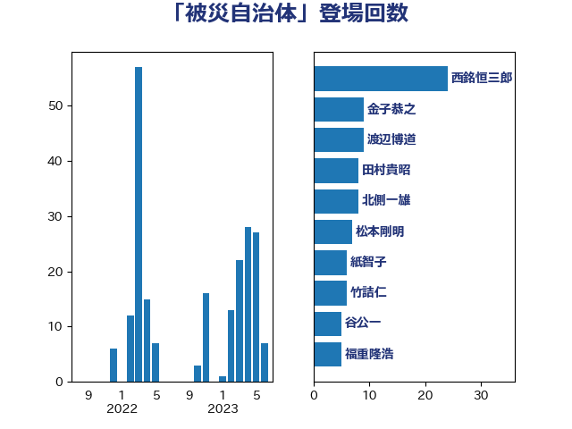

単語「被災自治体」

| 西銘恒三郎 | 自由民主党 | 24 回 |
| 金子恭之 | 自由民主党 | 9 回 |
| 渡辺博道 | 自由民主党 | 9 回 |
| 田村貴昭 | 日本共産党 | 8 回 |
| 北側一雄 | 公明党 | 8 回 |
| 松本剛明 | 自由民主党 | 7 回 |
| 紙智子 | 日本共産党 | 6 回 |
| 竹詰仁 | 国民民主党 | 6 回 |
| 谷公一 | 自由民主党 | 5 回 |
| 福重隆浩 | 公明党 | 5 回 |
| 小島敏文 | 自由民主党 | 4 回 |
| 鬼木誠 | 立憲民主党 | 3 回 |
| 若松謙維 | 公明党 | 3 回 |
| 秋葉賢也 | 自由民主党 | 3 回 |
| 早坂敦 | 日本維新の会 | 3 回 |
| 岸真紀子 | 立憲民主党 | 3 回 |
| 中川貴元 | 自由民主党 | 3 回 |
| 永岡桂子 | 自由民主党 | 2 回 |
| 柳本顕 | 自由民主党 | 2 回 |
| 岸田文雄 | 自由民主党 | 2 回 |
| 塩川鉄也 | 日本共産党 | 2 回 |
| 冨樫博之 | 自由民主党 | 2 回 |
| 井林辰憲 | 自由民主党 | 2 回 |
| 鈴木俊一 | 自由民主党 | 1 回 |
| 金子恵美 | 立憲民主党 | 1 回 |
| 藤井一博 | 自由民主党 | 1 回 |
| 若林健太 | 自由民主党 | 1 回 |
| 芳賀道也 | 国民民主党 | 1 回 |
| 横沢高徳 | 立憲民主党 | 1 回 |
| 松野博一 | 自由民主党 | 1 回 |
| 新垣邦男 | 立憲民主党 | 1 回 |
| 掘井健智 | 日本維新の会 | 1 回 |
| 後藤茂之 | 自由民主党 | 1 回 |
| 市村浩一郎 | 日本維新の会 | 1 回 |
| 岩谷良平 | 日本維新の会 | 1 回 |
| 岡本三成 | 公明党 | 1 回 |
| 山本順三 | 自由民主党 | 1 回 |
| 山本太郎 | れいわ新選組 | 1 回 |
| 山崎誠 | 立憲民主党 | 1 回 |
| 山口那津男 | 公明党 | 1 回 |
| 小西洋之 | 立憲民主党 | 1 回 |
| 宮崎勝 | 公明党 | 1 回 |
| 下野六太 | 公明党 | 1 回 |